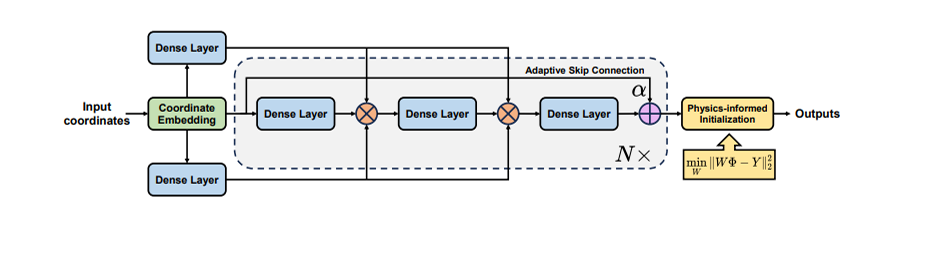

Projects that show how I work: analysis-backed decisions, then validation through experiments, simulation benchmarks, or build feedback.

Optional image: motor_mount.png
Robotics Hardware: Coaxial UAV Motor Mount
UPenn • Metal AM hardware • Integration + validation planning
Metal AM
Load-path reasoning
Tolerance/fit
CAD + drawings
- Hardware Design: Designed metal 3D-printed motor-mount adapter enabling coaxial conversion.
- Structural Analysis: Defined thrust/torque/vibration load cases and checked stiffness and load paths.
- Validation Plan: Documented fit, alignment, stiffness checks and assembly assumptions for repeatable builds.

Optional image: lmd.png
Physics-Informed Modeling: LMD Thermal PDEs
PyTorch • Moving heat source • Validation against FEA/benchmarks
PINNs
Heat transfer
Boundary conditions
Abaqus
- PINN Development: Solved transient heat-transfer PDEs for laser metal deposition.
- Heat Source Modeling: Implemented moving volumetric source and temperature-dependent properties.
- Model Validation: Compared predictions to Abaqus FEA and experimental benchmarks; analyzed stability and convergence.

Optional image: piratenet.png
PirateNet: Physics-Informed Thermal Modeling for AM
JAX • Multiplicative-gated PINN • Training + sampling studies
JAX
Causal training
Adaptive weights
Sampling studies
- PINN Architecture: Implemented PirateNet (multiplicative gating) for stable training where standard MLPs diverged.
- Training Strategy: Used adaptive loss weighting and causal temporal training for physically realistic transients.
- Feature/Sampling Study: Found Fourier features can fail for localized Gaussian heat sources; compared uniform vs importance sampling vs residual-adaptive (RAR), with RAR showing no benefit at higher cost.
- Validation: Validated melt-pool depth against NIST AM-Bench LPBF experiments (~11% relative error in conduction-mode regimes).

Optional image: waam.png
Optimization of WAAM (Simufact)
NIT Trichy • FEA + meshing • Residual stress + distortion
Simufact
Meshing
Residual stress
Distortion
- FEA & Meshing: Built thermo-mechanical WAAM models including mesh refinement and element selection.
- Process Optimization: Reduced residual stress (~18%) and distortion (~22%) via parameter tuning and sequencing, validated through physical testing.

Optional image: mr-clutch-exploded.png
Instrumentation: MR Clutch + Test Bench
Western University • Prototype + sensors + synchronized DAQ
Arduino
Torque/Speed
Test bench
- Mechanical Design: Mini planetary magnetorheological clutch for controlled torque transmission.
- Experimental Setup: Built test bench with torque/speed/current sensing and synchronized DAQ.
- Data Analysis: Correlated electrical input to mechanical response for validation.

Optional image: psi-baja.png
PSI Racing BAJA: Suspension & Steering (CAD → Build)
NIT Trichy • Manual fabrication + welding + vehicle testing
Fabrication
ANSYS
MATLAB
GD&T drawings
- CAD-to-Build: Designed and fabricated suspension/steering systems including cutting, welding, grinding, fit-up.
- Structural Validation: Validated components using ANSYS under static and dynamic load cases.
- Vehicle Testing: Full vehicle-level testing, failure analysis, and iterations using test data + MATLAB.
- Design Optimization: Reduced component mass by 12% while maintaining factor of safety > 1.8.